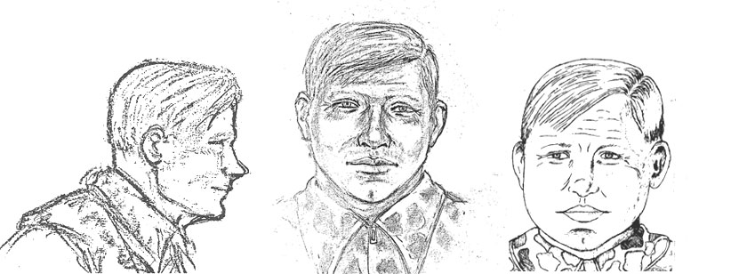

The Visalia Ransacker
Crimes From April 1974 to December 1975

He first appeared on police radars in the small farming town of Visalia, California in mid 1974 when he began a one and a half year crime spree of over 100 Burglaries and over 30 incidents of prowling/peeping, at least one homicide, one attempted kidnapping and an attempted murder on a police officer. The most homes he ever hit in one day was 12! His unique signature rituals became clear to police over time, so much so that they could begin tell Which crimes were his and which were not.
A typical home invasion carried out by a ransacker went like this. He would gain entrance either through an open window, or by prying open a window, or a door. Once inside, he would go open other Windows at the other end of the home as a means for a quick escape. He would often wedge chairs under door handles or stack items such as plates inside the front door as an early warning signal in case somebody came home.
He would ransack drawers and cupboards in the home, but paid special attention to the bedrooms. He would often steal piggy banks, but then leave large bills behind. He would regularly steal one earring from a pair, and leave the other. He would also rummage through underwear drawers, laying bras and underwear out on the beds, sometimes in tact, and sometimes cutting them to pieces before laying them out.
He would destroy family photos, smashing frames, cutting up photographs, or sometimes simply facing them downwards. And sometimes he would take photographs, or other personal items or keepsakes which held no real monetary value. Lockets, Engraved bracelets, and anything else that held sentimental value.
His intention even back then was to terrorise his victims. The financial rewards were secondary in nature, and he would often make this clear by leaving money out in the open, I believe as a sign to the home owners. I also think that was also the intention when only taking one ear ring from a pair, which he did regularly,..leaving one behind is like leaving them with a reminder of what he had done.
He wasn't just ransacking homes all over the small town of Visalia, he was also a prolific prowler and peeper, with footprints being found under the windows of young girls all over the town. He was arching girls all over town at night, and often came close to being spotted or caught.